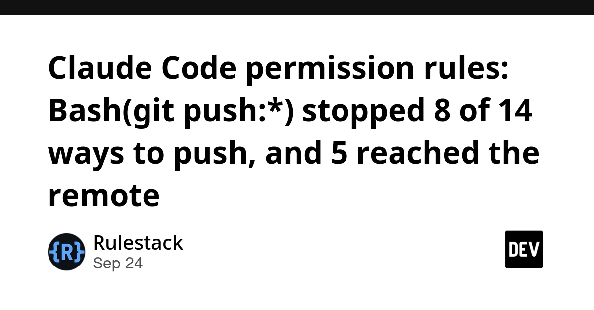
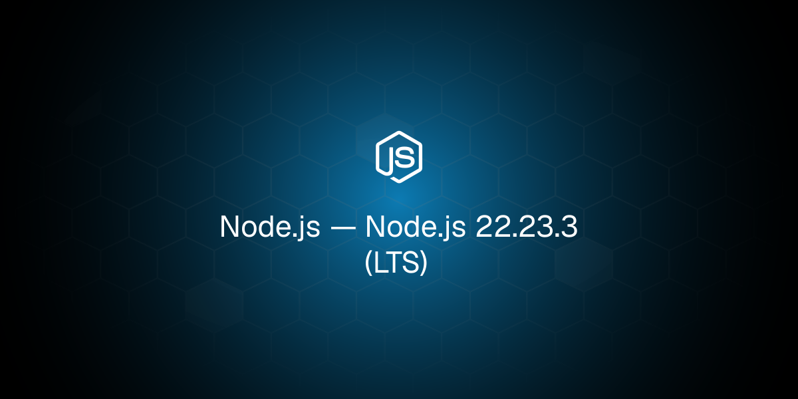
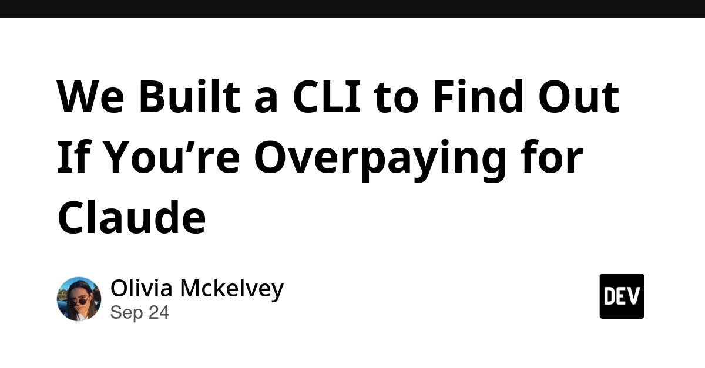
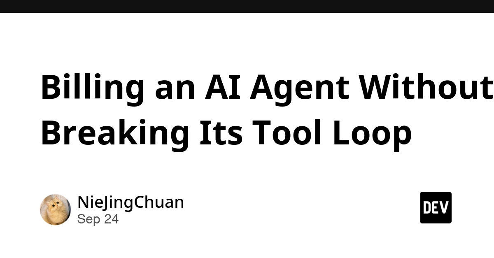
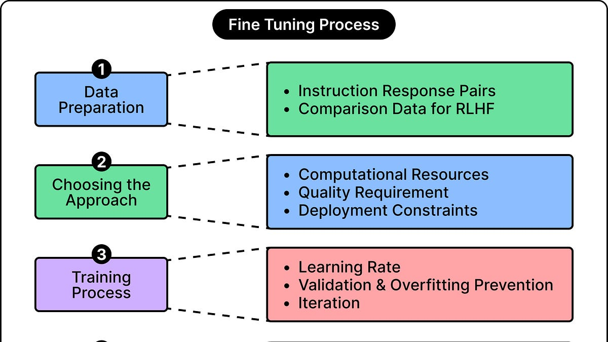
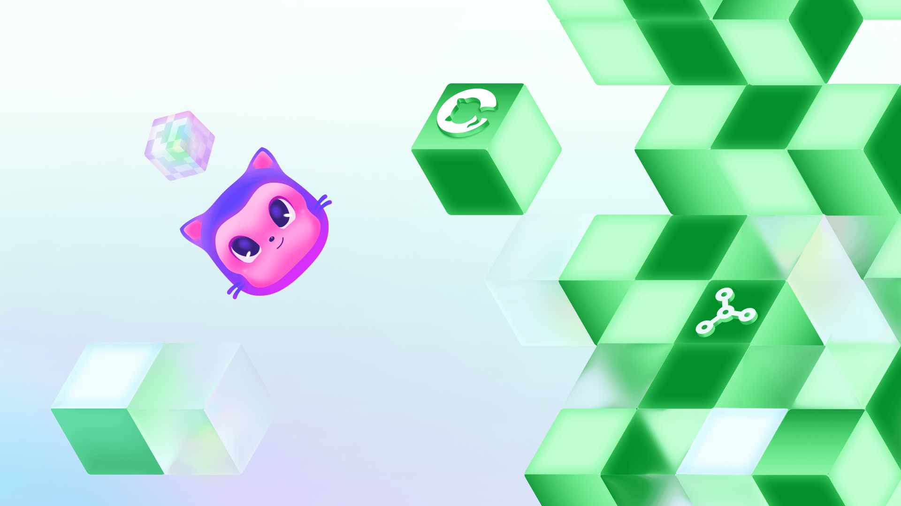

🔥 Top 3 (must read)
HN discussion
[Claude Code reads AGENTS.md only when telemetry is on [fixed]](https://blog.szypowi.cz/p/claude-code-reads-agents.md-only-when-telemetry-is-on/) () A blogger found that Claude Code only loaded
AGENTS.md when telemetry was turned on. With telemetry off, the file was silently skipped. The bug is now fixed, and the HN thread has 455 points and 260 comments. Why it matters: If your team turned off telemetry, your agent may have been ignoring your project rules. Update Claude Code, then check that it really reads your instruction files.N
Claude Code permission rules: Bash(git push:*) stopped 8 of 14 ways to push, and 5 reached the remote
The author set one deny rule,
Bash(git push:), and tried 14 different ways to push with Claude Code 2.1.278. 5 of them still reached the remote, for example git -c ... push, sh -c "git push", eval, and a shell script. Why it matters:* A deny rule matches text patterns, so it is not a real safety wall. If your team uses agents, protect branches on the server side too, not only in settings.json.
Rendering huge pull requests in the GitHub Copilot app
GitHub rebuilt the diff view in the Copilot app. It can now open a pull request with one million changed lines and hundreds of inline review comments. The post explains the frontend work that made this possible. Why it matters: This is a real case study on making big lists render fast in a web UI. It also shows where code review tools are going as AI agents open bigger PRs.
🛠 Tools & releases
Node.js 22.23.3 (LTS)
: a new patch release on the 22 LTS line. Read the changelog before you bump your backends.

Shadow roots, explained with live examples
: an interactive page that shows how CSS works inside and outside a shadow root (the hidden, separate DOM tree used by web components). Simon Willison built it with one prompt to Fable 5.1.
S
🤖 AI for developers
PennyWyze: a CLI to find out if you're overpaying for Claude
: an open-source CLI. It runs your prompt and a few examples with known answers on Opus, Sonnet, and Haiku. Then it shows the cheapest model that still passes your quality bar, in real dollars.

Billing an AI Agent Without Breaking Its Tool Loop
: one user request can mean many model calls, tool calls, and image calls. This post covers how to meter and bill that as one unit without breaking the agent loop.

Gemini 3.8 TTS Playground
: Google released
gemini-3.8-flash-tts and gemini-3.8-flash-lite-tts. They have more than 2,000 voices and can clone a custom voice from a 30-second sample. Simon's playground lets you try them in the browser.S
How to Customize a Model to Learn New Tricks
(ByteByteGo): an overview of ways to customize and fine-tune a model.

👔 Engineering & teams
Developers want more efficient software
: GitHub and Yale surveyed more than 1,000 developers. Many of them want tools, measurement, and clear guidance to cut wasted compute.

Which hat am I wearing right now?
(CNCF): how to stay neutral in open source when a company pays your salary. This is useful if your team members help maintain open-source projects.
🎯 For me
Claude Code hygiene day. Two of today's top stories are about Claude Code acting in ways you would not expect:
AGENTS.md was skipped when telemetry was off, and deny rules could be bypassed. As an EM who rolls out agents to a team, spend 15 minutes on two things. First, confirm the agent loads your instruction files. Second, add server-side branch protection.Copilot huge-PR rendering covers both React/web performance and code review at scale. It is a good read to share with the frontend team.
Node.js 22.23.3 LTS: a routine patch bump for your Node backends.
💡 App ideas & indie builds
ForensicDbg: a post-mortem debugger for native Windows x64/x86 crashes
(HN): you give it a crash dump, and it helps you find out why a native Windows app crashed. Problem: crash dumps are hard to read, and tools like WinDbg are hard to learn. Inspiration: find a painful, expert-only workflow and put a friendly tool in front of it. That idea works well for indie apps in any field.
🎓 Try this
Run the test from the Claude Code permission rules post on a throwaway repo. Add
Bash(git push:*) to .claude/settings.json, then ask Claude Code to push in a few of the ways that got through (sh -c "git push", git -c ... push). You will quickly see what your deny rules really block. Use the result to decide which guards must live on the server, for example branch protection and required reviews.